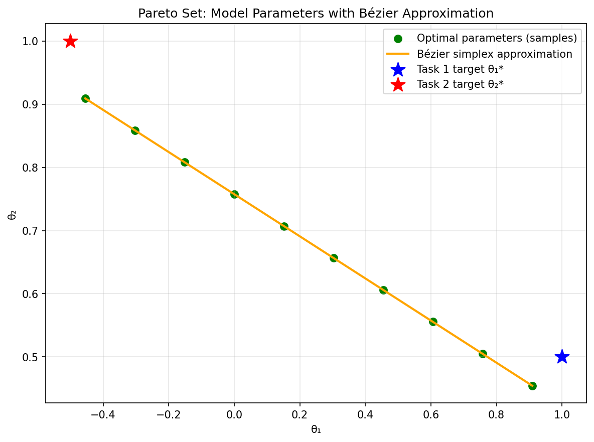
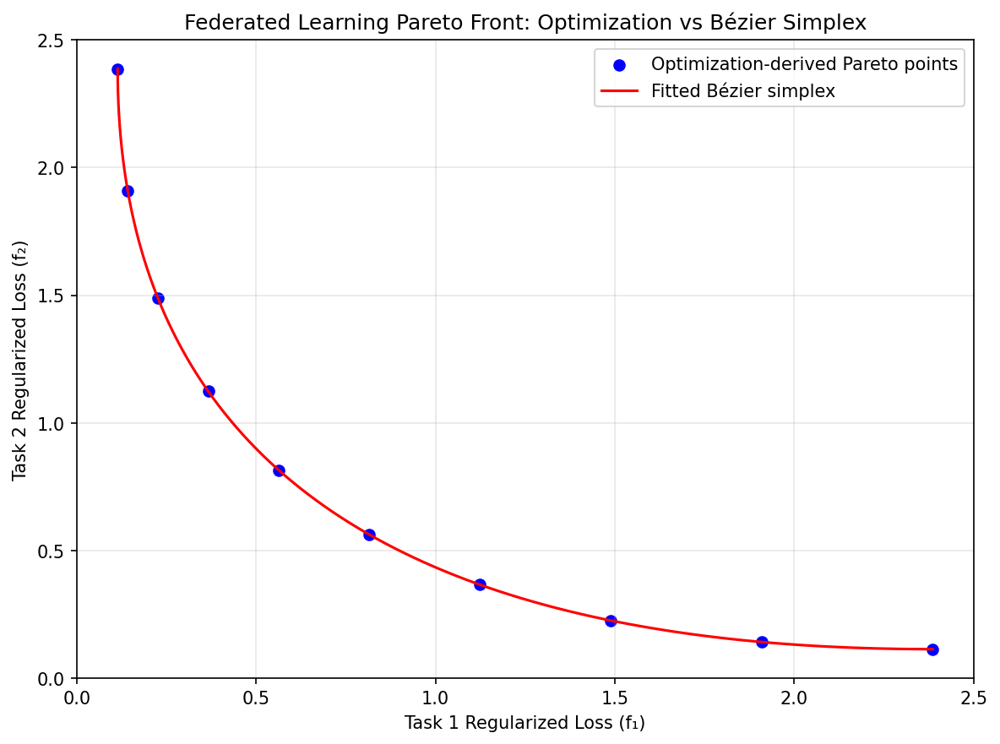

Multi-Task and Federated Learning
In modern machine learning, models are frequently tasked with balancing strictly competing performance indicators. In multi-task learning (MTL), a single shared neural representation must simultaneously optimize losses across different tasks, often leading to “gradient conflict” where improving one task substantially degrades another. This same underlying tension appears when training models with explicit fairness constraints, where the expected loss over different population subgroups forms a multi-objective optimization problem.
Furthermore, this principle is critically important in Federated Learning (FL), such as the MOCHA framework, where massive data is distributed across edge devices and a global model must balance diverse local losses against consensus.
By imposing strongly convex regularizations (e.g., Tikhonov/Ridge) on the model parameters alongside the local losses, the optimization formulations become naturally resolvable:
For convex task losses and \(\lambda>0\), adding this penalty makes each objective strongly convex. For twice differentiable losses, its Hessian contribution is \(2\lambda I\). This argument applies to convex models such as linear or logistic regression. Adding ridge to a general neural network does not by itself establish global strong convexity. Optimization rates also depend on the algorithm and its additional assumptions.
A Bézier decision map can approximate model parameters across task priorities, allowing repeated queries without a new reference solve each time. A front map instead predicts task losses. Either map assumes the same tasks and fixed training problem; introducing power or fairness constraints requires those conditions to be modeled explicitly.
Numerical Experiments
We demonstrate Bézier simplex fitting on a two-task federated learning problem with quadratic losses and Tikhonov regularization.
Problem Setup:
Model parameters: \(\theta \in \mathbb{R}^2\)
Task targets: \(\theta_1^* = [1.0, 0.5]\), \(\theta_2^* = [-0.5, 1.0]\)
Regularized task losses with \(\lambda = 0.1\):
Experiment Procedure:
Sample 10 weight vectors \(w = (w_1, w_2)\) on the 1-simplex from \((1,0)\) to \((0,1)\).
For each \(w\), solve \(\theta^*(w) = \arg\min_\theta [w_1 f_1(\theta) + w_2 f_2(\theta)]\) using L-BFGS-B.
Collect the Pareto front points \((f_1(\theta^*(w)), f_2(\theta^*(w)))\).
Fit a degree-3 Bézier simplex to the weight–loss pairs.
Visualize the fitted Bézier curve against the optimization-derived Pareto front.
 |
 |
Pareto set. |
Pareto front. |


The complete example script is available at examples/generate_federated_learning_pareto.py.
What the two fitted maps represent
The input is a task-priority vector, not a client’s feature vector. With two
tasks, BezierSpace.simplex(1, degree=3) takes rows [w1, w2] whose
entries sum to one. A parameter-space fit returns two columns for
theta; a front fit returns two loss columns. The first could supply
parameters to a downstream predictor, while the second supports comparison
of trade-offs. A loss-space prediction alone cannot reconstruct a predictor.
For this quadratic example, the weighted optimizer has a closed form:
The parameter map is affine in the weights, and the losses evaluated on it are quadratic. Thus a cubic has sufficient capacity for both in exact arithmetic. Small errors here demonstrate a simple representable target; they do not measure accuracy on a heterogeneous neural-network federation. The endpoints minimize one regularized task each, and interior weights interpolate priorities rather than client data.
Generate and assess a surrogate
Obtain one converged task-weighted solution at each training weight and keep
its parameters and all task losses together. Fit Samples(weights, values)
with torch_bsf.fit(), retaining the returned diagnostics. Generate
additional weights between training locations and solve the original task
problem there for an independent comparison. Include the endpoints because
minority-task performance can deteriorate near an extreme priority.
Assess parameter error and each task’s loss separately. Also recompute task losses at the predicted parameters: an independently fitted loss map need not equal losses evaluated on the parameter map. For a deployment with many parameter columns, aggregate parameter MSE can hide errors in a small but influential subset of coefficients. Prediction quality on held-out client examples is the relevant downstream check.
Changing the model and interpreting the scope
Increasing task count changes the input simplex dimension, while increasing
predictor size changes only the number of output columns. Increasing degree
adds controls and requires broader priority coverage. Increasing ridge in
the original task objectives shrinks their optima and changes the target
map. QuadraticPenalty in the surrogate fit instead regularizes Bézier
controls; these are different operations with different units.
The example optimizes two centralized quadratic losses. It does not implement client communication, secure aggregation, privacy accounting or a federated training protocol. For real client data, keep client evaluation local where required and define how a consistent parameter vector is obtained. Different neural solutions can have incompatible hidden-unit permutations, making direct parameter interpolation unreliable even when their losses are similar.
If a separate operating variable such as a regularization level varies independently of task priorities, encode it as another simplex factor; see Single and assembled domains. For fitting choices, use Cross-validation and degree search and Regularization and numerical evidence.